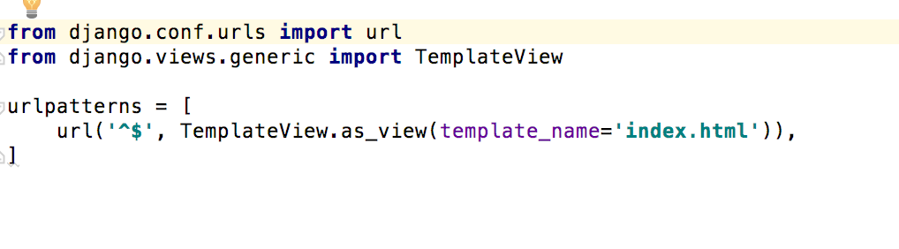

Introducing Django
Django is a web-framework which is really awesome at building dynamic website really fast.It creates high-security web applications which is backed by a database that includes some kind of interactivity that operates through browser.
Django is written in python so we need to install python and you should have python installed on your computer. You also need a code editor like Pycharm on your computer.
Django lets you build deep, dynamic, interesting sites in an extremely short time. Django is designed to let you focus on the fun, interesting parts of your job while easing the pain of the repetitive bits. In doing so, it provides high-level abstractions of common Web development patterns, shortcuts for frequent programming tasks, and clear conventions on how to solve problems.
At the same time, Django tries to stay out of your way, letting you work outside the scope of the framework as needed.
Django comes with common functionality like:-
*Authentication:It handles user accounts, groups, permissions and cookie-based user sessions.
* A Url: - Runserver command starts a server on the loopback interface(`127.0.0.1`) on the default port `5000` and gives a local url which works only on your local machine until you deploy it.
* A Template(Interface): - The interface for the end-user which can be designed in HTML, CSS, JavaScript etc.
* An object-relational mapper (ORM):- ORMs provide a high-level abstraction upon a relational database that allows a developer to write Python code instead of SQL to create, read, update and delete data and schemas in their database.
* Database: - Django attempts to support as many features as possible on all database back ends
are all included with the Django framework.In this tutorial, a small app is designed using Django which is called to-do list. This app lets you create your own to-do list for the day and can be extended for many more days to come.
This is the initial look for the app and it would be built during this entire tutorial.
But before we actually talk about building the app using this frame-work, we can take a look at the story behind why this framework was developed in first placed and little bit of history that can give you little bit of heads-up about what's going to come next
Djaongo history
Django grew organically from real-world applications written by a Web development team in Lawrence, Kansas, USA. It was born in the fall of 2003, when the Web programmers at the Lawrence Journal-World newspaper, Adrian Holovaty and Simon Willison, began using Python to build applications. The World Online team, responsible for the production and maintenance of several local news sites, thrived in a development environment dictated by journalism deadlines. For the sites – including LJWorld.com, Lawrence.com and KUsports.com – journalists (and management) demanded that features be added and entire applications be built on an intensely fast schedule, often with only days’ or hours’ notice. Thus, Simon and Adrian developed a time-saving Web development framework out of necessity – it was the only way they could build maintainable applications under the extreme deadlines. In summer 2005, after having developed this framework to a point where it was efficiently powering most of World Online’s sites, the team, which now included Jacob Kaplan-Moss, decided to release the framework as open source software. They released it in July 2005 and named it Django, after the jazz guitarist Django Reinhardt.
Required Language &Editor
At its core, Django is simply a collection of libraries written in thePython programming language . To develop a site using Django, you write Python code that uses these libraries. Learning Django, then, is a matter of learning how to program in Python and understanding how the Django libraries work. If you don’t have experience programming in Python, you’re in for a treat. It’s easy to learn and a joy to use! Although this book doesn’t include a full Python tutorial, it highlights Python features and functionality where appropriate, particularly when code doesn’t immediately make sense. Still, I recommend you read the official Python tutorial. Django is written in python so we need to install python and you should have python installed on your computer. You also need a code editor like Pycharm on your computer. Django need a code editor because the first reason is that code needs to be plain text and second are specialized for editing code, so they can provide helpful features like highlighting code with color according to its meaning, or automatically closing quotes for you.
Virtual Environment
A Virtual Environment is a tool to keep the dependencies required by different projects in separate places, by creating virtual Python environments for them. virtualenv is a tool to create isolated Python environments. virtualenv creates a folder which contains all the necessary executables to use the packages that a Python project would need. Follow the steps to install Virtual environment on a your machine:
pip install python
mkdir project
cd project
pip install virtualenv
activate virtualenv(To begin using the virtual environment, it needs to be activated:)
The name of the current virtual environment will now appear on the left of the prompt (e.g. (venv)Your-Computer:your_project UserName$) to let you know that it’s active. From now on, any package that you install using pip will be placed in the venv folder, isolated from the global Python installation.
Deactivate Virtualenv
To delete a virtual environment, just delete its folder.
rm -rf venv
After a while, though, you might end up with a lot of virtual environments littered across your system, and its possible you’ll forget their names or where they were placed.
Installation
After virtual environment is installed in the directory you want to use your project, we need to install django. It's wise and recommended that for every virtual environment, we should install django separately
(myvenv) ~$ pip install django
Downloading/unpacking django
Installing collected packages: django
Successfully installed django
Cleaning up...
After Django is installed, we can check the django-admin commands which can let you do everything.Here is the command you can use to check the django -admin command and that's how it looks like

You can see that with Django-admin, you get all these command to use and to start a new project we can use couple of commands like:

Then run python manage.py check and then you can run server which would run the server and gets you the url for the webpage. Here are the steps one can use to to check and run server

Django-Files
After Django standard package is installed, we can take a look at the files which contribute towards making the web-application:
Settings.py
A Django settings file contains all the configuration of your Django installation. This document explains how settings work and which settings are available.
After creating an application, we also need to tell Django that it should use it. We do that in the file mysite/settings.py. We need to find INSTALLED_APPS and add a line containing 'myTutApp', just above ]. So the final product should look like this:

urls.py
When a user makes a request for a page on your web app, Django controller takes over to look for the corresponding view via the url.py file, and then return the HTML response or a 404 not found error, if not found. In url.py, the most important thing is the "urlpatterns" tuple. It’s where you define the mapping between URLs and views This module is pure Python code and is a simple mapping between URL patterns (simple regular expressions) to Python functions (your views). To design URLs for an app, you create a Python module informally called a URLconf (URL configuration). This module is pure Python code and is a simple mapping between URL patterns (simple regular expressions) to Python functions (your views). Here is an example: 
In the above pic, ypu can see that each url points towards a functions in views.py and these urls are used in template also so that the action that takes place on the form can take place as defined in the views.py Django uses regex, short for "regular expressions to match URLS to the view
views.py
A view function, or “view” for short, is simply a Python function that takes a web request and returns a web response.
This response can be the HTML contents of a Web page, or a redirect, or a 404 error, or an XML document, or an image.
In this view, we returning HTTP response to render the HTML (as you have probably noticed we have the HTML hard coded in the view). To see this view as a page we just need to map it to a URL.
We have two methods where the index method gets the data from HTML through "POST" and parses it to create a new object inside the table model in database.The Line:
* todo.objects.create(task_name=name, task_description=description)
creates a new object in the database.
Same way is the delete_todo method that takes the task.id from the items in views.py and deletes the data from the database.
The complete file looks somethings like this and has comments added which would help you to understand what each line does.
Models.py
A model is a class that represents table or collection in our DB, and where every attribute of the class is a field of the table or collection. Once you have defined your models, you need to tell Django you’re going to use those models. Do this by editing your settings file and changing the INSTALLED_APPS setting to add the name of the module that contains your models.py. When you add new apps to INSTALLED_APPS, be sure to run manage.py migrate, optionally making migrations for them first with manage.py makemigrations. There are three main functions that's used to perform some task while building this app.Application configuration objects store metadata for an application. Some attributes can be configured in AppConfig subclasses. Others are set by Django and read-only.
Create-object:-todo.objects.create(task_name=name, task_description=description)
Delete objects: - todo.objects.get(id=id).delete()
Get Objects: - name = request.POST.get('name')
Here is the model that was developed for this app since we have name for the task, description for the task and the date is auto generated.
Admin.py
Django provides a ready-to-use user interface for administrative activities. We all know how an admin interface is important for a web project. Django automatically generates admin UI based on your project models. You need to resister your model so that it works the way it's designed and expected to. Here are two commands that needs to run on Shell after models are created. and superuser need to be created too to be able to make changes to the applications:
python manage.py migrate
$ python manage.py createsuperuser
APP.py
This file is created to help the user include any application configuration for the app. Using this, you can configure some of the attributes of the application.
Templates.py
A Django template's format is described in a language called HTML (Hyper Text Mark-up Language).
Django’s template engine provides a powerful mini-language for defining the user-facing layer of your application, encouraging a clean separation of application and presentation logic.
Templates can be maintained by anyone with an understanding of HTML; no knowledge of Python is required. In this app, this templates.py designs the interface for the end-users and interacts with urls.py which directs the action to views.py
This templates has a staic file too which can be used for the beautiful layoyt and that file is called CSS(casade style sheet) files.
Deployment
What is deployment? and why is it necessary? Deployment encompasses all the processes involved in getting new software or hardware up and running properly in its environment, including installation, configuration, running, testing, and making necessary changes. The word implementation is sometimes used to mean the same thing.
wsgi.py
Django’s primary deployment platform is WSGI, the Python standard for web servers and applications. Django’s startproject management command sets up a simple default WSGI configuration for you, which you can tweak as needed for your project, and direct any WSGI-compliant application server to use. The startproject command creates a file project_name/wsgi.py that contains such an application callable.
Conclusion
In nutshell, Djnago is a web framework for creating web-applications which is normally backed by a database, that includes some kind of interactivity, that operates through a browser. Also, communications happen starting from HTML form to settings file
which has in-built configuration files which takes care of many basic settings one has to go through to build a server-side application. This has bunch of files which takes care of things like communication between database, functions defined for html form action which gets routed through the urls which are defined and translated in urlsconfigure file.
That's how the application looks when fully developed.:-